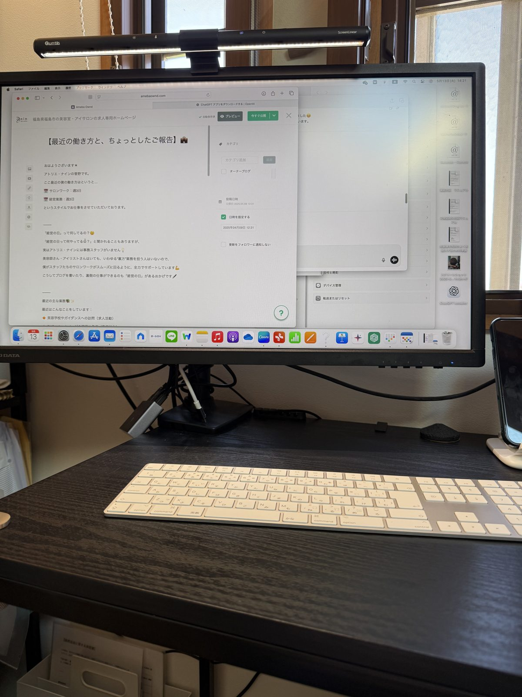

【最近の働き方と、ちょっとしたご報告】💼✂️
おはようございます☀
アトリエ・ナインの菅野です。
ここ最近の僕の働き方はというと…
📅 サロンワーク：週3日
📅 経営業務：週3日
というスタイルでお仕事をさせていただいております。
⸻
「経営の日」って何してるの？🤔
「経営の日って何やってるの？」と聞かれることもありますが、
実はアトリエ・ナインには事務スタッフがいません💡
美容師さん・アイリストさんはいても、いわゆる“裏方”業務を担う人はいないので、
僕がスタッフたちのサロンワークがスムーズに回るように、全力でサポートしています💪
こうしてブログを書いたり、裏側の仕事ができるのも「経営の日」があるおかげです🖋️
⸻
最近の主な業務📚✨
最近はこんなことをしています：
🔸 美容学校やガイダンスへの訪問（求人活動）
🔸 SNS・ホームページの運用や発信（集客強化）
🔸 外部パートナーとの打ち合わせ
🔸 教育・技術マニュアルの作成と見直し
🔸 労務改善・働き方改革の検討
…などなど。
他にもやることは山ほどありますが、まさに「縁の下の力持ち」な役割です🧱
⸻
フェーズの変化と、決断✊
昔は、ほぼ毎日サロンに立って、全力で働いていました。
でも、体力的な限界も少しずつ感じ始め、
スタッフが増えるにつれて、やるべきこと・向き合う相手も変わってきました。
規模が大きくなれば、経営の学びも終わりがない…。
だからこそ、ここで働き方のフェーズを変える決断をしました。
お客様には本当に申し訳ないのですが、
「いつでもいます！」な美容師ではなくなってしまいました🙏
⸻
今のスタイル＝半分美容師、半分経営者🧑💼✂️
もちろん、美容師としての現場感覚は大切にしたいので、
完全に経営だけに専念するつもりはありません。
あと5〜6年はこのペースを続けられたら…という気持ちです。（短くなったらごめんなさい🙇♂️）
ただ、スタッフが本当に優秀なので、もしかしたらもっと早く「経営全振り」になる可能性もあります。
この働き方ができるのは、今のメンバーのおかげです。
本当にありがとう✨
⸻
これからの目標🌈
もっとスタッフが働きやすく、もっと誇れる会社にしたい。
そのために、労務環境や制度の見直しも、頭の中ではずっと準備中です。
「いつやるか」を決めるのが今後の課題かなと、思っています💭

⸻
最後にお知らせ📣
現在、求人は出ていますが、次回の募集はしばらく未定となる可能性があります。
気になっている方は、お早めにご連絡くださいね😊
⸻
それでは、また👋
読んでいただきありがとうございました。
株式会社 アトリエ・ナイン
代表 菅野 勇紀
Instagram ： atelier_nine.kanno
Threads : atelier_nine.kanno
face book : kanno
2015年9月、福島県福島市に《hair atelier nine》をオープン。
福島県福島市で
【ヘッドスパサロン】hair atelier nine 2店舗
【eyelash salon】n ＋＜n plus＞ 1店舗
を展開しております。
オープンしてから３年目に法人化。オープン８年目。サロンの労働環境改善のため、社員の完全週休２日を実現。サロンワーク８時間で残業なし。スタッフに働きやす環境整備をもっとうに経営を心がけており、気づけばスタッフ総勢13名。
ほぼ、女性のサロンです。女性が働きやすいサロンを今後も展開予定。
福島市の美容室の求人をお探しの美容師さんぜひお話だけでもいかがでしょうか？？
求人に少しでも興味のある方はお気軽にお問い合わせください。
サロン見学や求人の概要の問合せ、相談など、なんでもお待ちしております。
《関連ワード》
＃福島県＃福島市＃福島駅＃福島市岡部#福島市森合
＃美容室#ヘアサロン＃ヘッドスパサロン＃ヘッドスパ＃髪質改善
＃ショートスタイル＃ボブスタイル＃ミディアムスタイル＃ロングスタイル#メンズカット
＃美容師求人＃美容室求人＃美容師募集＃スタイリスト募集＃アシスタント募集＃アイリスト募集
＃福島市美容院#福島市カット#福島市カラー#福島市パーマ#福島市ヘアセット#福島市トリートメント#福島市予約#福島市おすすめ#福島市安い#福島市口コミ